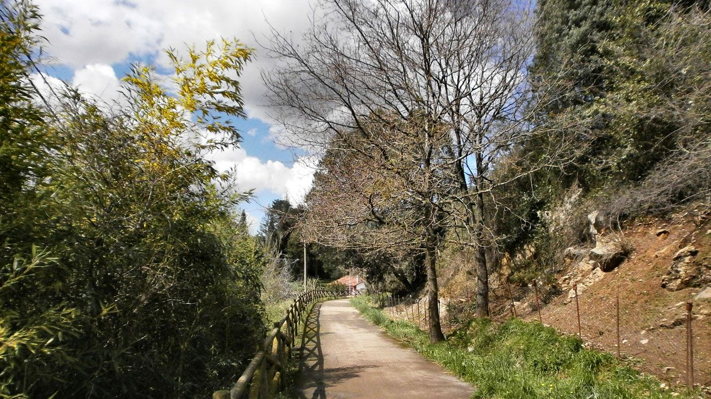

<table width="100%" height="100%" border="3">
	<tr height="10%">
		<td colspan="2">
		<center>
		<h1> Torrelavega </h1>
        </center>
		</td>
	</tr>		
	<tr>
		<td> Magnífico paseo del mar a la montaña, o viceversa, junto al bosque de ribera que orla la orilla izquierda de los ríos Besaya y Saja y la ría de San Martín de la Arena.
		  
		 </td>
		<td width="40%" height="60%" bgcolor="red">
		<a href="tabla.html">Inicio</a>
		</br>
		<a href="tabla2.html">Via verde</a>
		</br>
		<a href="tabla3.html">La lechera</a>
		</td>
	</tr>	
	</table>